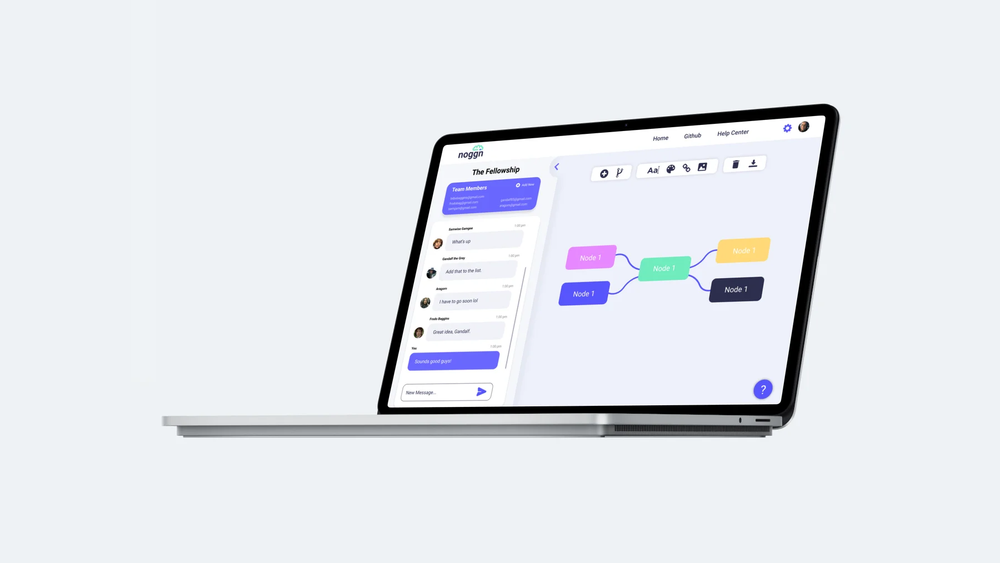
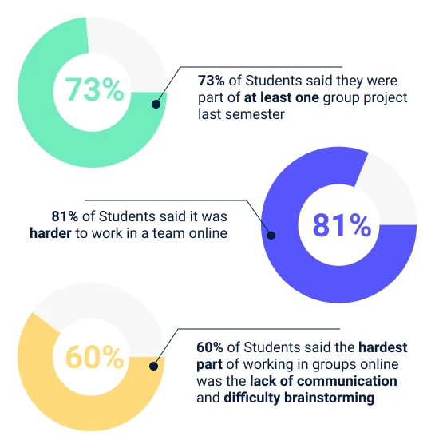
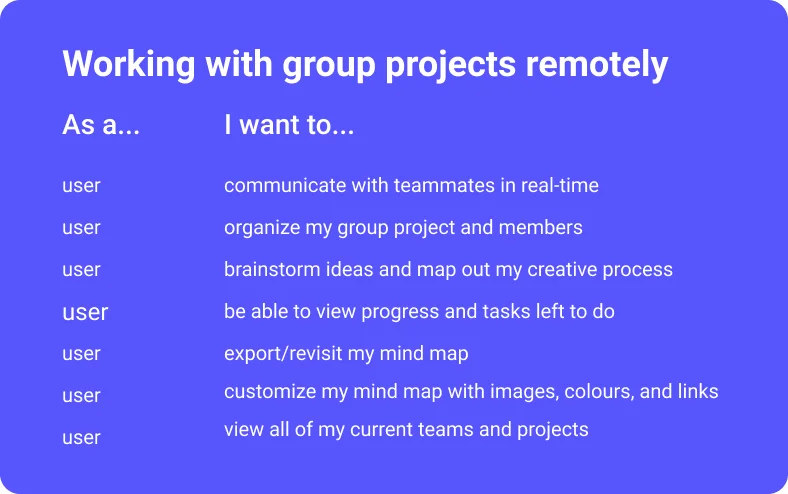
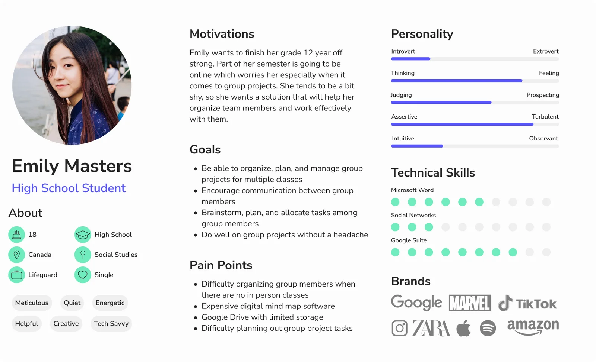
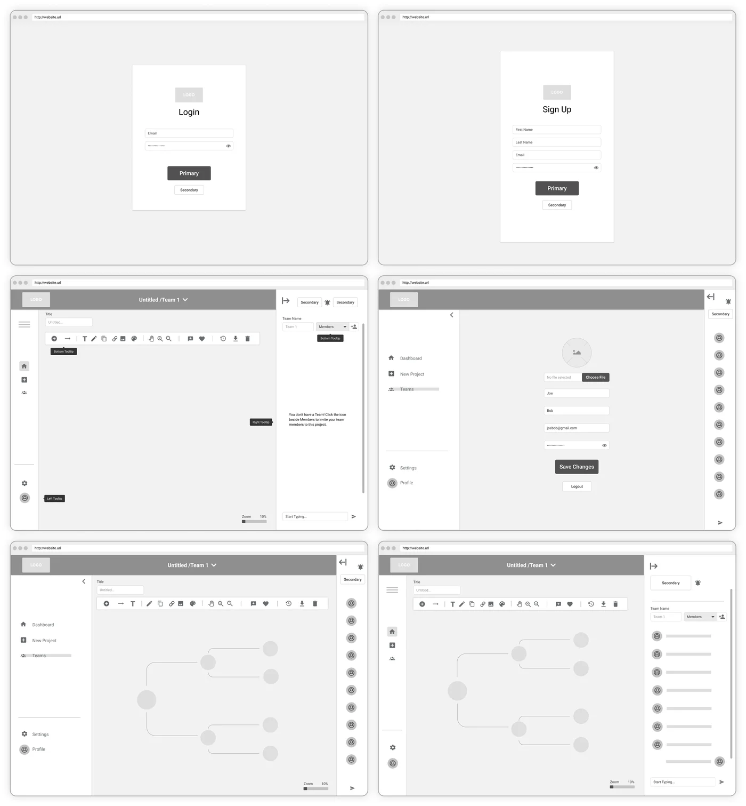
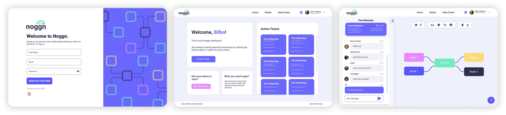
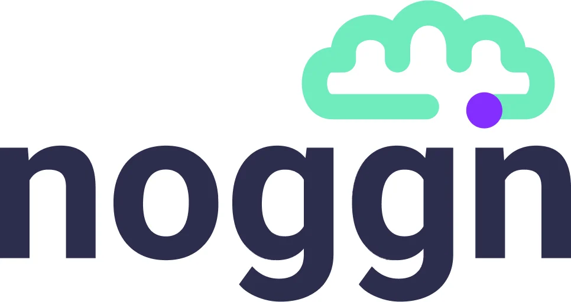
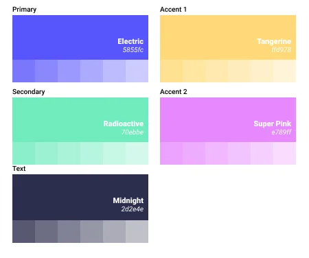
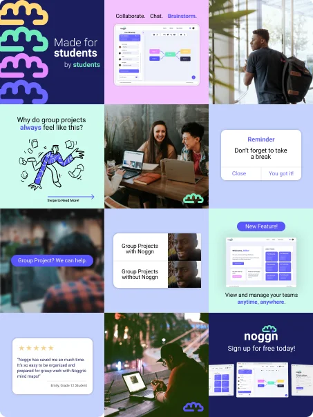

Archive — noggn — Capstone, UBC Okanagan
A brainstorming app for students, by students
When university went online, group projects got harder. noggn gave teams one place to map ideas and talk them through, together.

Overview
Our fourth-year capstone, built for the year school moved online.
During the 2020/21 school year, university classes were almost entirely online. That alone was a huge change for students. My classmate Nick Hemingway and I decided to tackle it for our Bachelor of Media Studies capstone project.
Research
Students were struggling to communicate and brainstorm as a group, remotely.
We surveyed 32 university students. Almost three-quarters had been part of at least one group project online, and most found teamwork harder that way, mainly because of a lack of communication.
The research also showed how students like to start a project: by brainstorming. 21 of them said their favourite way to develop an idea is a mind map.


The solution
A collaborative, web-based brainstorming app.
noggn helps students work together more efficiently. Its main goal is a collaborative online space where teams can be creative and develop ideas together. I turned the themes from our research into user stories, then into a persona.

Design
Two features take up most of the screen: the canvas and the chat.
Early wireframes mapped where the key features would live. Using Emily’s story, I gave most of the space to two things: the canvas, where teams build mind maps with a toolbar of ways to customize them, and a chat widget for quick conversations without a video call.

Chat on the left, and collapsible
User feedback showed people preferred the chat to the left of the canvas, so it moved there, and it collapses for a full-screen canvas.
Because…
The map is the work and the chat supports it. Students could talk while they mapped, then get the conversation out of the way.
Mind maps can be customized with colour, arrangement, photos, links and text, so teams have room to play. A simple dashboard after login shows every active team, so students can jump straight back into their projects.

Building it
I built the front end myself, in React.
I had the fun (but tedious) job of bringing the designs to life, using React and Material UI, with Firebase and Node on the back end. This is the high-fidelity prototype we presented to our class.
Brand
Modern but friendly, productive but quirky.
“Noggn” is a silly word for head, and I wanted the whole experience to feel that upbeat. The icon combines a cloud and a brain: brainstorming, on the cloud. The colours borrow from technology, like bright LEDs and multicoloured wires.


I also planned an Instagram strategy for students: memes, bright colours and consistent messaging that pulled every brand element together.

Reflection
What I learned
This project took a lot of planning, organizing and time management, and even more thinking about the problem. It’s where I learned that, for me, design is about solving problems for people: finding the things in everyday life that could be better, and making them into experiences people love.
I know my job is done when people feel less stressed, or even excited, about something that used to cause them discomfort.
More from the archive
Data Body →